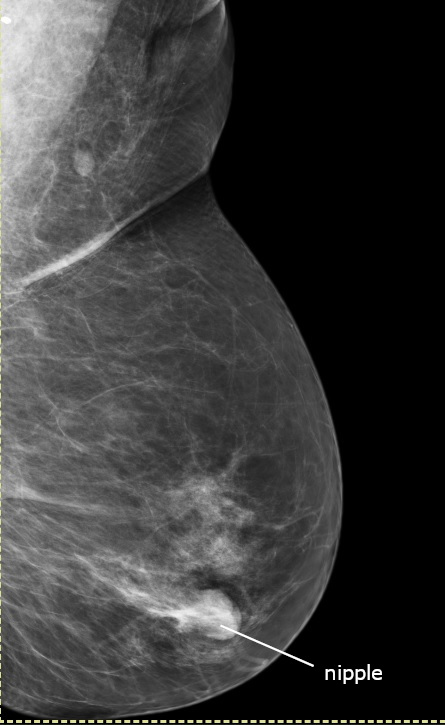

Ficha del catálogo
Mamografía normal (proyección oblicua mediolateral)
- Sistema
- Mama
- Modalidad
- RX
- Región
- Mama
- Dificultad
- Intermedio
Estudio radiológico de la mama con equipos y dosis específicas, base de los programas de detección precoz del cáncer de mama. La proyección oblicua mediolateral es la más completa porque incluye la cola axilar, donde asientan muchas lesiones.
Técnica
Compresión firme de la mama, necesaria para separar los tejidos, reducir la dosis y disminuir el movimiento. Se realizan de rutina dos proyecciones por mama: Craneocaudal y oblicua mediolateral.
Qué observar
- Densidad mamaria según la clasificación establecida, desde predominantemente grasa hasta extremadamente densa: Cuanta mayor densidad, menor sensibilidad del estudio
- Nódulos: Valorar forma, márgenes y densidad, ya que los márgenes espiculados son altamente sospechosos
- Microcalcificaciones: Su morfología y distribución son claves (las agrupadas, pleomórficas o lineales resultan sospechosas)
- Distorsión de la arquitectura del tejido glandular
- Asimetrías entre ambas mamas, comparando siempre los estudios en espejo
- Ganglios axilares, valorando tamaño y conservación del hilio graso
- Piel y pezón, buscando retracción o engrosamiento
Hallazgos
Mamografía con patrón glandular de distribución habitual, sin nódulos, distorsiones ni microcalcificaciones sospechosas.
Perlas
El criterio técnico de una buena proyección oblicua mediolateral es que el músculo pectoral se vea hasta la altura del pezón y que el surco inframamario quede incluido. Sin esos elementos, parte del tejido mamario no se ha estudiado y pueden escaparse lesiones.
Diagnóstico diferencial
- Carcinoma invasor
- Se manifiesta como un nódulo de márgenes espiculados o mal definidos, con frecuencia de densidad alta y a veces con retracción de la piel o del pezón.
- Fibroadenoma
- Es un nódulo de contornos circunscritos, ovalado y orientado paralelo a la piel, que con los años puede calcificarse de forma gruesa en palomita de maíz.
- Quiste simple
- En mamografía es un nódulo circunscrito indistinguible de un sólido, y es el ultrasonido el que lo caracteriza como anecoico con refuerzo posterior.
- Carcinoma ductal in situ
- Se expresa sobre todo como microcalcificaciones pleomórficas o lineales ramificadas de distribución segmentaria o lineal, con frecuencia sin nódulo asociado.
- Cicatriz radial
- Produce distorsión de la arquitectura con un centro radiolúcido y espículas largas, aspecto que se superpone al del carcinoma y que suele requerir biopsia.
- Necrosis grasa y cambios posquirúrgicos
- Aparecen en el lecho de una cirugía o de un traumatismo, con quiste oleoso de contenido graso y calcificaciones en cáscara de huevo, y se estabilizan o disminuyen con el tiempo.
Simuladores
- La superposición de tejido fibroglandular crea asimetrías y pseudonódulos que se disipan en proyecciones adicionales de compresión focalizada.
- Las calcificaciones vasculares, cutáneas y las de tipo secretor son benignas y tienen morfologías características que evitan confundirlas con microcalcificaciones sospechosas.
- Los artefactos por desodorante, talco o restos en la piel producen densidades puntiformes de aspecto cálcico en la superficie mamaria.
- Una compresión insuficiente o una colocación incorrecta deja tejido fuera del campo, sobre todo la región posterior y la cola axilar, y crea la falsa impresión de un estudio completo.
Por modalidad
- RX
- La mamografía es la base de los programas de detección precoz y la única técnica que muestra con fiabilidad las microcalcificaciones; la tomosíntesis reduce el efecto de la superposición.
- US
- Complemento imprescindible: Distingue lesiones sólidas de quísticas, evalúa la axila, es de elección en mamas densas y en mujeres jóvenes, y guía biopsias.
- RM
- Máxima sensibilidad; se emplea en el cribado de alto riesgo, en la valoración de la extensión tumoral, en la respuesta al tratamiento y en las prótesis.
- TC
- No se usa para el estudio local de la mama, aunque interviene en la estadificación a distancia de la enfermedad.
Protocolo
Se realizan de rutina dos proyecciones por mama: La craneocaudal y la oblicua mediolateral. En la oblicua mediolateral el receptor se angula entre cuarenta y cinco y sesenta grados paralelo al borde del músculo pectoral, y se considera técnicamente correcta cuando se ve el pectoral hasta la altura del pezón, el pezón queda de perfil y se incluye el surco inframamario. La compresión firme es esencial porque separa los tejidos, uniformiza el grosor, reduce la dosis y evita el borrado por movimiento. Se emplean equipos dedicados con ánodo y filtro específicos y control automático de exposición. Ante hallazgos dudosos se añaden compresión focalizada, magnificación para caracterizar calcificaciones y proyecciones complementarias.
Clasificación
El sistema BI-RADS estandariza tanto el léxico descriptivo como la conclusión del informe. Sus categorías van de cero, cuando el estudio es incompleto y requiere pruebas adicionales, a seis, reservada a la malignidad ya confirmada por biopsia. La categoría uno indica un estudio negativo y la dos, hallazgos benignos, ambas con seguimiento habitual; la tres corresponde a hallazgos probablemente benignos con un riesgo muy bajo de malignidad y se sigue a corto plazo; la cuatro agrupa los hallazgos sospechosos, con subdivisiones de sospecha creciente, y obliga a biopsia; y la cinco corresponde a hallazgos altamente sugestivos de malignidad. El informe incluye además la categoría de densidad mamaria, de a a d, porque condiciona la sensibilidad del estudio.
Errores frecuentes
- Aceptar un estudio con colocación insuficiente, en el que parte del tejido posterior o de la cola axilar no se ha incluido.
- No comparar con estudios previos, ya que la estabilidad prolongada y los cambios sutiles son criterios decisivos.
- Analizar las microcalcificaciones sin magnificación, con lo que se pierde la valoración de su morfología, que es lo que define la sospecha.
- Asignar una categoría BI-RADS que no se corresponda con la recomendación de manejo, generando confusión clínica.

mamografia mama tamizaje microcalcificaciones densidad cancer MLO